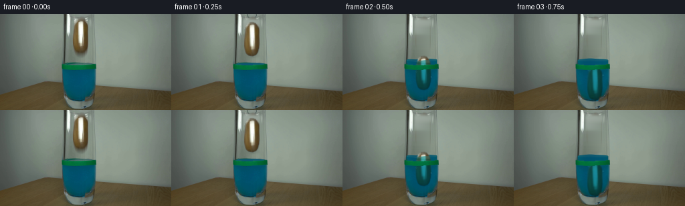
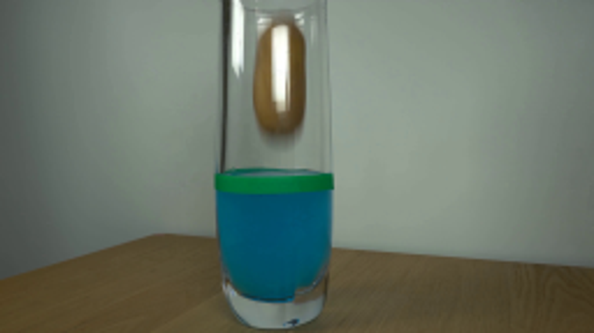
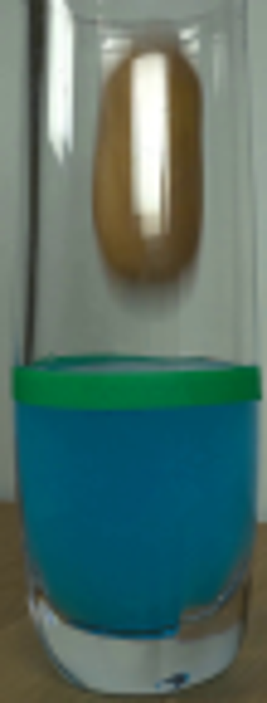
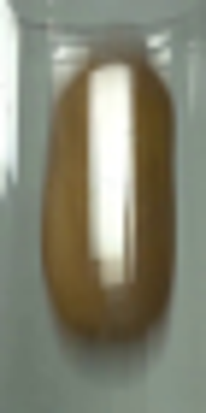
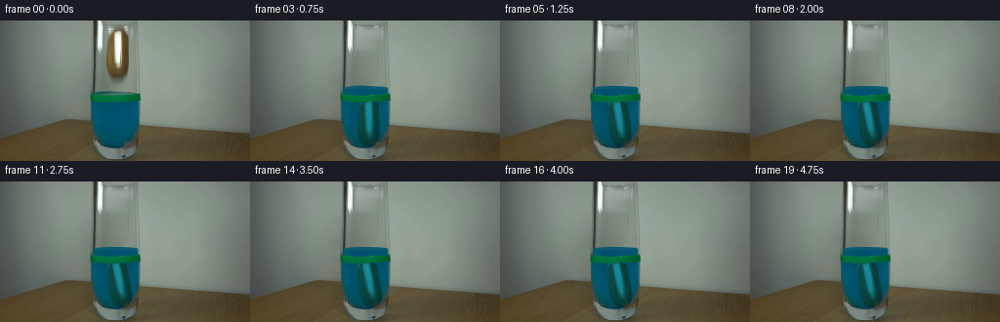
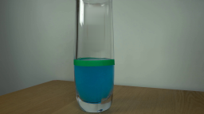

CODING AGENTS AS PIXEL WORLD MODELS
traex/GPT-6.1-Sol · 0144
点击播放 · 原生 RGB 像素
逐轮保存的候选
回放视频、检查图与代码变化。
每份候选均可单独播放。实际图片检查记录在下方工具轨迹中。
候选 01播放与检查图
点击播放 · 原生 RGB 像素


展开代码变化
--- 上一保存版本
+++ 本次保存版本
@@ -0,0 +1,163 @@
+from pathlib import Path
+import math
+import numpy as np
+import cv2
+from PIL import Image, ImageDraw
+from scipy.ndimage import gaussian_filter
+import artifact_io
+
+ROOT=Path(__file__).resolve().parent
+src=np.array(Image.open(ROOT/'first_frame.png').convert('RGB'))
+H,W=src.shape[:2]
+Y,X=np.mgrid[:H,:W].astype(np.float32)
+# Recover the stationary interior of the glass using only its adjacent clear areas.
+clean=src.astype(np.float32).copy()
+for y in range(6,69):
+ left=src[y,104:108].mean(0)
+ right=src[y,134:137].mean(0)
+ for x in range(107,134):
+ u=(x-106)/29
+ clean[y,x]=left*(1-u)+right*u
+clean=cv2.GaussianBlur(clean,(0,0),.45)
+# Feather the local replacement into the unmodified photograph.
+replace=np.zeros((H,W),np.float32)
+replace[7:65,108:133]=1
+replace=cv2.GaussianBlur(replace,(0,0),1.5)
+# The more expanded feather removes the soft shadow beneath the suspended object.
+clean=src*(1-replace[...,None])+clean*replace[...,None]
+
+# Trace the potato's soft silhouette in the supplied image. All shading is photographic.
+S=4
+mat=Image.new('L',(W*S,H*S),0)
+p=[(118,7.6),(122,7.5),(125.5,9),(129,12),(131,17),(131.7,24),
+ (131.4,37),(130.6,46),(129,52),(126.5,56.1),(121.5,58),
+ (115.5,57),(112,54.1),(110,49),(108.9,42),(108.9,30),
+ (109.8,20),(111.3,15),(114,10.7)]
+ImageDraw.Draw(mat).polygon([(round(a*S),round(b*S)) for a,b in p],fill=255)
+alpha=np.asarray(mat.resize((W,H),Image.Resampling.LANCZOS),np.float32)/255
+alpha=cv2.GaussianBlur(alpha,(0,0),.65)
+# Recover the foreground where the original antialiasing blended it into the wall.
+texture=np.clip((src.astype(np.float32)-clean*(1-alpha[...,None]))/np.maximum(alpha[...,None],.12),0,255)
+# Restrict unstable fringe colors.
+texture=np.where((alpha>.12)[...,None],texture,src.astype(np.float32))
+
+# Preserve the green tape and permanent glass highlights as foreground occluders.
+green=(src[:,:,1]>src[:,:,2]*1.26)&(src[:,:,0]<30)&(Y>73)&(Y<85)&(X>91)&(X<144)
+band=cv2.GaussianBlur(green.astype(np.float32),(0,0),.38)
+band=np.maximum(band,green.astype(np.float32)*.97)
+# Area of the cylinder, smoothly antialiased at the thick glass edges.
+inside=np.clip((X-94.3)/1.2,0,1)*np.clip((141.5-X)/1.2,0,1)
+
+# A falling ellipsoid, entering water with buoyancy, drag, then a damped contact.
+def trajectory():
+ dt=1/1600
+ pos=33.0; vel=0.; out=[]; hit=None
+ for k in range(8001):
+ t=k*dt
+ f=np.clip((pos- (74.6-6.2))/24.5,-1,1)
+ # Solve the small displacement feedback between immersion and water level.
+ for _ in range(5):
+ fraction=.5+.75*f-.25*f**3
+ level=74.6-6.2*fraction
+ f=np.clip((pos-level)/24.5,-1,1)
+ fraction=.5+.75*f-.25*f**3
+ if t>.17:
+ if hit is None:
+ acc=1520*(1-fraction/1.085)-.075*fraction*vel*abs(vel)
+ vel+=acc*dt; pos+=vel*dt
+ if pos>=104.3:
+ hit=t;pos=104.3;vel=0
+ else:
+ age=t-hit
+ pos=104.3-1.1*np.exp(-5*age)*np.sin(12*age)
+ if k%400==0:
+ out.append((pos,fraction,level,hit,t))
+ return out[:20]
+
+
+def frame(n,state):
+ if n==0:return src.copy()
+ pos,frac,level,hit,t=state
+ age=max(t-.30,0)
+ # A modest transient wave while the potato penetrates the free surface.
+ waveamp=(1.35*math.exp(-2.3*age) if t>.30 else 0.)
+ sx=(X-118)/23
+ wave=waveamp*(.65*np.sin(2.6*sx+12.2*age)+.35*np.sin(6*sx-15*age))
+ surface=level+wave
+ out=clean.copy()
+ # Fluid rises above the fixed tape. Its existing lower region stays unchanged.
+ old_y=74.6
+ curved=1.8*np.sqrt(np.clip(1-sx*sx,0,1))
+ below=np.clip((Y-surface+curved+.5)/1.0,0,1)
+ raised=inside*below*np.clip((83.6-Y)/1.2,0,1)
+ # Use the source blue-water radiometry rather than a flat synthetic fill.
+ fluid_sample=src[86:108].astype(np.float32).mean(axis=0)
+ blue=np.broadcast_to(fluid_sample[None,:,:],(H,W,3)).copy()
+ depth=np.clip(Y-surface,0,15)
+ blue+=np.stack([depth*0,depth*.08,depth*.08],-1)
+ # The thin free surface reflects the same muted wall and daylight.
+ top=np.exp(-((Y-surface)/1.4)**2)*(np.abs(sx)<.97)
+ blue=blue*(1-.20*top[...,None])+np.array([78,125,125])* (.20*top[...,None])
+ out=out*(1-raised[...,None])+blue*raised[...,None]
+
+ # Photographic foreground, transformed about its center, with slight contact tilt.
+ tilt=0.
+ if hit is not None:
+ a=max(t-hit,0)
+ tilt=11.0*(1-math.exp(-3*a))+1.2*math.exp(-3*a)*math.sin(10*a)
+ else:
+ tilt=2.2*math.sin(t*3)*min(max(t-.17,0)*2,1)
+ cx=120.3+min(max(t-.17,0)*1.6,1.8)
+ cy=pos
+ m=cv2.getRotationMatrix2D((120.3,33.0),tilt,1)
+ m[0,2]+=cx-120.3;m[1,2]+=cy-33
+ a=cv2.warpAffine(alpha,m,(W,H),flags=cv2.INTER_LINEAR)
+ # Warping premultiplied color keeps the transparent contour free of dark halos.
+ premul=cv2.warpAffine(texture*alpha[...,None],m,(W,H),flags=cv2.INTER_LINEAR)
+ potato=np.divide(premul,np.maximum(a[...,None],.001))
+ immersion=np.clip((Y-surface+.2)/1.1,0,1)
+ immersion=cv2.GaussianBlur(immersion,(0,0),.35)
+ depth_o=np.clip(Y-surface,0,58)
+ # Dye attenuates warm skin and whitish glare; water adds diffuse blue scattering.
+ attenuation=np.stack([.16*np.exp(-depth_o/110), .60*np.exp(-depth_o/240), .65*np.exp(-depth_o/200)],-1)
+ underwater=potato*attenuation*.74+src.astype(np.float32)*.42
+ underwater=cv2.GaussianBlur(underwater,(0,0),.5)
+ color=potato*(1-immersion[...,None])+underwater*immersion[...,None]
+ obj_alpha=a*inside
+ out=out*(1-obj_alpha[...,None])+color*obj_alpha[...,None]
+
+ # Local meniscus and disturbance, only while entering; no persistent splash.
+ if .30<t<1.3:
+ # A broad low wave follows the raised elliptical water surface.
+ crest=np.exp(-((Y-(surface+curved))/0.50)**2)*inside
+ crest*=.22*math.exp(-2.6*age)
+ out=out*(1-crest[...,None])+np.array([84,135,136])*crest[...,None]
+ # Two tiny transient entrained air bubbles rise and vanish in the dyed liquid.
+ if n in (2,3,4):
+ for j in range(2):
+ bx=110.5+j*22+math.sin(t*9+j)*.5
+ by=86+j*8-11*(t-.5)
+ r=.65+.2*j
+ rr=np.sqrt((X-bx)**2+(Y-by)**2)
+ ba=np.exp(-((rr-r)/.40)**2)*.20
+ ba*=np.clip((Y-surface)/2,0,1)*inside
+ out=out*(1-ba[...,None])+np.array([84,152,166])*ba[...,None]
+
+ # Dark tips of the existing offscreen grabber part and lift out of the rim.
+ if n==1:
+ tool=Image.new('RGBA',(W*4,H*4),(0,0,0,0));d=ImageDraw.Draw(tool)
+ d.line([(114*4,0),(114*4,3*4),(116*4,5*4)],fill=(45,59,60,155),width=4)
+ d.line([(127*4,0),(127*4,3*4),(125*4,5*4)],fill=(38,53,56,145),width=4)
+ tool=np.array(tool.resize((W,H),Image.Resampling.LANCZOS)).astype(np.float32)
+ ta=tool[:,:,3:]/255
+ out=out*(1-ta)+tool[:,:,:3]*ta
+ # Green water-level marker remains physically attached to the outside of the glass.
+ out=out*(1-band[...,None])+src*band[...,None]
+ return np.clip(np.rint(out),0,255).astype(np.uint8)
+
+if __name__=='__main__':
+ states=trajectory()
+ frames=np.stack([frame(i,s) for i,s in enumerate(states)])
+ artifact_io.save(frames,ROOT)
+ Image.fromarray(np.clip(clean,0,255).astype('uint8')).save(ROOT/'.tmp/clean.png')
+ print([(i,round(s[0],2),round(s[1],2),round(s[2],2)) for i,s in enumerate(states)])
可观测工具轨迹
实际执行的命令与返回图片。
命令 1exit 0
/bin/bash -lc 'ls -la; cat prompt.txt; cat GENERATION_RULES.md'
命令 2exit 0
/bin/bash -lc "cat artifact_io.py; python - <<'PY'
from PIL import Image
im=Image.open('first_frame.png');print(im.size);im.resize((1024,576)).save('.tmp/large.png')
PY"命令 3exit 0
/bin/bash -lc "python - <<'PY'
from PIL import Image
im=Image.open('first_frame.png'); im.crop((90,0,145,144)).resize((440,1152)).save('.tmp/glass.png')
import numpy as np
im=np.array(im)
for y in [0,3,5,10,15,25,40,55,60,65,70,73,75,78,82,90,100,120,130]:
print(y, [(x,tuple(im[y,x])) for x in [100,105,107,109,112,118,124,130,133,136,139,142]])
PY"命令 4exit 0
/bin/bash -lc "python - <<'PY' import importlib.util for m in ['numpy','cv2','scipy','PIL']: print(m, bool(importlib.util.find_spec(m))) PY"
命令 5exit 0
/bin/bash -lc "python - <<'PY'
from PIL import Image
Image.open('first_frame.png').crop((102,0,137,70)).resize((420,840)).save('.tmp/potato.png')
PY"命令 6exit 0
/bin/bash -lc "cat > generate.py <<'PY'
from pathlib import Path
import math
import numpy as np
import cv2
from PIL import Image, ImageDraw
from scipy.ndimage import gaussian_filter
import artifact_io
ROOT=Path(__file__).resolve().parent
src=np.array(Image.open(ROOT/'first_frame.png').convert('RGB'))
H,W=src.shape[:2]
Y,X=np.mgrid[:H,:W].astype(np.float32)
# Recover the stationary interior of the glass using only its adjacent clear areas.
clean=src.astype(np.float32).copy()
for y in range(6,69):
left=src[y,104:108].mean(0)
right=src[y,134:137].mean(0)
for x in range(107,134):
u=(x-106)/29
clean[y,x]=left*(1-u)+right*u
clean=cv2.GaussianBlur(clean,(0,0),.45)
# Feather the local replacement into the unmodified photograph.
replace=np.zeros((H,W),np.float32)
replace[7:65,108:133]=1
replace=cv2.GaussianBlur(replace,(0,0),1.5)
# The more expanded feather removes the soft shadow beneath the suspended object.
clean=src*(1-replace[...,None])+clean*replace[...,None]
# Trace the potato's soft silhouette in the supplied image. All shading is photographic.
S=4
mat=Image.new('L',(W*S,H*S),0)
p=[(118,7.6),(122,7.5),(125.5,9),(129,12),(131,17),(131.7,24),
(131.4,37),(130.6,46),(129,52),(126.5,56.1),(121.5,58),
(115.5,57),(112,54.1),(110,49),(108.9,42),(108.9,30),
(109.8,20),(111.3,15),(114,10.7)]
ImageDraw.Draw(mat).polygon([(round(a*S),round(b*S)) for a,b in p],fill=255)
alpha=np.asarray(mat.resize((W,H),Image.Resampling.LANCZOS),np.float32)/255
alpha=cv2.GaussianBlur(alpha,(0,0),.65)
# Recover the foreground where the original antialiasing blended it into the wall.
texture=np.clip((src.astype(np.float32)-clean*(1-alpha[...,None]))/np.maximum(alpha[...,None],.12),0,255)
# Restrict unstable fringe colors.
texture=np.where((alpha>.12)[...,None],texture,src.astype(np.float32))
# Preserve the green tape and permanent glass highlights as foreground occluders.
green=(src[:,:,1]>src[:,:,2]*1.26)&(src[:,:,0]<30)&(Y>73)&(Y<85)&(X>91)&(X<144)
band=cv2.GaussianBlur(green.astype(np.float32),(0,0),.38)
band=np.maximum(band,green.astype(np.float32)*.97)
# Area of the cylinder, smoothly antialiased at the thick glass edges.
inside=np.clip((X-94.3)/1.2,0,1)*np.clip((141.5-X)/1.2,0,1)
# A falling ellipsoid, entering water with buoyancy, drag, then a damped contact.
def trajectory():
dt=1/1600
pos=33.0; vel=0.; out=[]; hit=None
for k in range(8001):
t=k*dt
f=np.clip((pos- (74.6-6.2))/24.5,-1,1)
# Solve the small displacement feedback between immersion and water level.
for _ in range(5):
fraction=.5+.75*f-.25*f**3
level=74.6-6.2*fraction
f=np.clip((pos-level)/24.5,-1,1)
fraction=.5+.75*f-.25*f**3
if t>.17:
if hit is None:
acc=1520*(1-fraction/1.085)-.075*fraction*vel*abs(vel)
vel+=acc*dt; pos+=vel*dt
if pos>=104.3:
hit=t;pos=104.3;vel=0
else:
age=t-hit
pos=104.3-1.1*np.exp(-5*age)*np.sin(12*age)
if k%400==0:
out.append((pos,fraction,level,hit,t))
return out[:20]
def frame(n,state):
if n==0:return src.copy()
pos,frac,level,hit,t=state
age=max(t-.30,0)
# A modest transient wave while the potato penetrates the free surface.
waveamp=(1.35*math.exp(-2.3*age) if t>.30 else 0.)
sx=(X-118)/23
wave=waveamp*(.65*np.sin(2.6*sx+12.2*age)+.35*np.sin(6*sx-15*age))
surface=level+wave
out=clean.copy()
# Fluid rises above the fixed tape. Its existing lower region stays unchanged.
old_y=74.6
curved=1.8*np.sqrt(np.clip(1-sx*sx,0,1))
below=np.clip((Y-surface+curved+.5)/1.0,0,1)
raised=inside*below*np.clip((83.6-Y)/1.2,0,1)
# Use the source blue-water radiometry rather than a flat synthetic fill.
fluid_sample=src[86:108].astype(np.float32).mean(axis=0)
blue=np.broadcast_to(fluid_sample[None,:,:],(H,W,3)).copy()
depth=np.clip(Y-surface,0,15)
blue+=np.stack([depth*0,depth*.08,depth*.08],-1)
# The thin free surface reflects the same muted wall and daylight.
top=np.exp(-((Y-surface)/1.4)**2)*(np.abs(sx)<.97)
blue=blue*(1-.20*top[...,None])+np.array([78,125,125])* (.20*top[...,None])
out=out*(1-raised[...,None])+blue*raised[...,None]
# Photographic foreground, transformed about its center, with slight contact tilt.
tilt=0.
if hit is not None:
a=max(t-hit,0)
tilt=11.0*(1-math.exp(-3*a))+1.2*math.exp(-3*a)*math.sin(10*a)
else:
tilt=2.2*math.sin(t*3)*min(max(t-.17,0)*2,1)
cx=120.3+min(max(t-.17,0)*1.6,1.8)
cy=pos
m=cv2.getRotationMatrix2D((120.3,33.0),tilt,1)
m[0,2]+=cx-120.3;m[1,2]+=cy-33
a=cv2.warpAffine(alpha,m,(W,H),flags=cv2.INTER_LINEAR)
# Warping premultiplied color keeps the transparent contour free of dark halos.
premul=cv2.warpAffine(texture*alpha[...,None],m,(W,H),flags=cv2.INTER_LINEAR)
potato=np.divide(premul,np.maximum(a[...,None],.001))
immersion=np.clip((Y-surface+.2)/1.1,0,1)
immersion=cv2.GaussianBlur(immersion,(0,0),.35)
depth_o=np.clip(Y-surface,0,58)
# Dye attenuates warm skin and whitish glare; water adds diffuse blue scattering.
attenuation=np.stack([.16*np.exp(-depth_o/110), .60*np.exp(-depth_o/240), .65*np.exp(-depth_o/200)],-1)
underwater=potato*attenuation*.74+src.astype(np.float32)*.42
underwater=cv2.GaussianBlur(underwater,(0,0),.5)
color=potato*(1-immersion[...,None])+underwater*immersion[...,None]
obj_alpha=a*inside
out=out*(1-obj_alpha[...,None])+color*obj_alpha[...,None]
# Local meniscus and disturbance, only while entering; no persistent splash.
if .30<t<1.3:
# A broad low wave follows the raised elliptical water surface.
crest=np.exp(-((Y-(surface+curved))/0.50)**2)*inside
crest*=.22*math.exp(-2.6*age)
out=out*(1-crest[...,None])+np.array([84,135,136])*crest[...,None]
# Two tiny transient entrained air bubbles rise and vanish in the dyed liquid.
if n in (2,3,4):
for j in range(2):
bx=110.5+j*22+math.sin(t*9+j)*.5
by=86+j*8-11*(t-.5)
r=.65+.2*j
rr=np.sqrt((X-bx)**2+(Y-by)**2)
ba=np.exp(-((rr-r)/.40)**2)*.20
ba*=np.clip((Y-surface)/2,0,1)*inside
out=out*(1-ba[...,None])+np.array([84,152,166])*ba[...,None]
# Dark tips of the existing offscreen grabber part and lift out of the rim.
if n==1:
tool=Image.new('RGBA',(W*4,H*4),(0,0,0,0));d=ImageDraw.Draw(tool)
d.line([(114*4,0),(114*4,3*4),(116*4,5*4)],fill=(45,59,60,155),width=4)
d.line([(127*4,0),(127*4,3*4),(125*4,5*4)],fill=(38,53,56,145),width=4)
tool=np.array(tool.resize((W,H),Image.Resampling.LANCZOS)).astype(np.float32)
ta=tool[:,:,3:]/255
out=out*(1-ta)+tool[:,:,:3]*ta
# Green water-level marker remains physically attached to the outside of the glass.
out=out*(1-band[...,None])+src*band[...,None]
return np.clip(np.rint(out),0,255).astype(np.uint8)
if __name__=='__main__':
states=trajectory()
frames=np.stack([frame(i,s) for i,s in enumerate(states)])
artifact_io.save(frames,ROOT)
Image.fromarray(np.clip(clean,0,255).astype('uint8')).save(ROOT/'.tmp/clean.png')
print([(i,round(s[0],2),round(s[1],2),round(s[2],2)) for i,s in enumerate(states)])
PY
python generate.py"命令 7exit 0
/bin/bash -lc "python - <<'PY'
import numpy as np
from PIL import Image
p=np.load('pixels.npz')['pixels']
first=np.asarray(Image.open('first_frame.png'))
reconstructed=np.stack([(p[:,:,0]>>16)&255,(p[:,:,0]>>8)&255,p[:,:,0]&255],-1).astype('uint8')
assert np.array_equal(reconstructed,first)
assert p.shape==(144,256,20)
Image.open('frames/19.png').resize((1024,576)).save('.tmp/final_large.png')
print('Verified: 20 RGB frames, 256x144, frame 00 pixel-identical.')
PY"视觉工具实际返回图片 1

视觉工具实际返回图片 2

视觉工具实际返回图片 3

视觉工具实际返回图片 4

视觉工具实际返回图片 5

视觉工具实际返回图片 6

保存候选 1 份；完成命令 7 次；可验证图片返回 6 张。原始 API 响应与完整日志保留在本地。